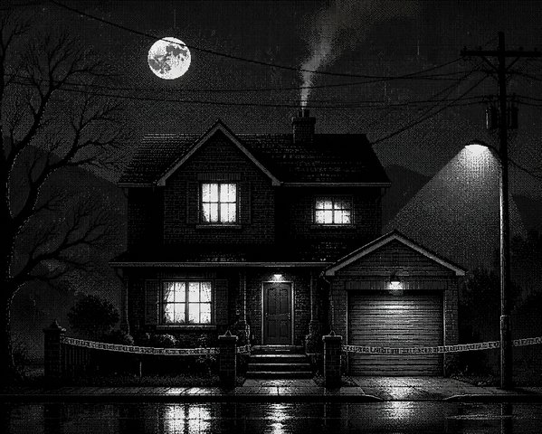
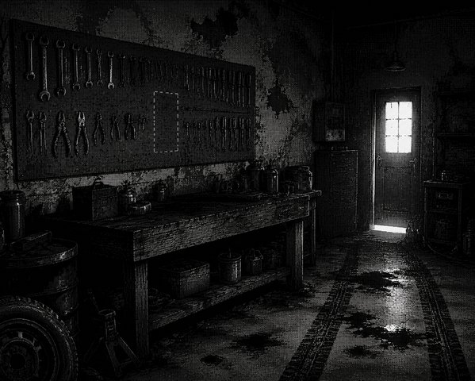
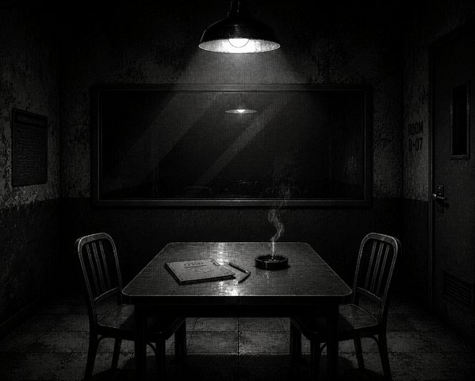
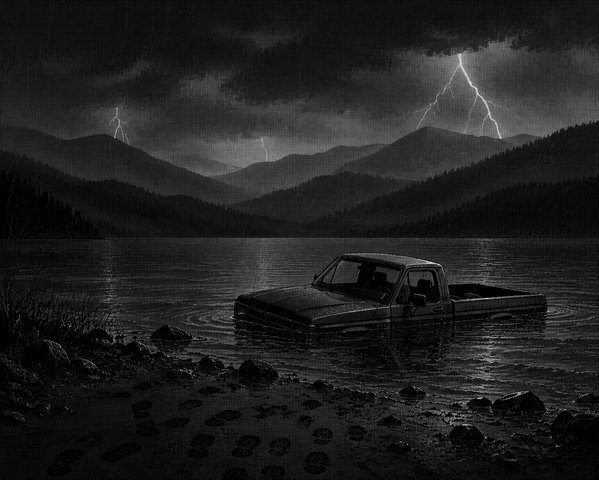

Crowwood Mystery · 1989
A pixel-art detective text adventure set in a small town where nothing ever happens — until it does.
v0.1 Demo · Godot 4《鸦林镇疑案》是一款侦探题材文字冒险游戏，使用 Godot 4 引擎开发。故事设定在 1989 年美国中西部一个虚构小镇——鸦林镇。玩家扮演一位干了十五年的老警长，接到报案后赶往玫瑰街 114 号，发现女主人死于钝器伤、十二岁的少年窒息而亡、男主人连人带皮卡沉进了三里外的鸦湖水库。
游戏的核心体验不在于"找到凶手是谁"，而在于你如何一步步拼凑出真相。你手下的警力有限，只能同时追两条线；你收集到的每条线索都会被记入笔记本，但其中有些可能是误导；你审讯嫌疑人时，只能用笔记本里实际存在的线索来质问对方。真正的侦探工作不是灵光一现，而是把碎片串成链条。
"你不是在破案。你是在为一家人找回名字。"
调查过程中接触到的每一条信息都会被自动记录到笔记本中。笔记对所有线索一视同仁——不管是确凿的物证还是道听途说的猜测。
绿色 ✓ 标记表示已核实的线索；黄色 ? 标记表示尚未验证（可能是误导）；蓝色 ◆ 标记表示通过推理系统自行推导出的结论。玩家需要自己判断每条线索的可信度。
在调查的关键节点，游戏会要求玩家暂停并整理思路。输入任意推理关键词，引擎会匹配 230+ 词库，给出具体的方向提示。命中足够多的关键词时，可以解锁隐藏的推论线索——这些推论无法通过常规调查获得。
审讯场景下，思维笔记变为自由提问模式：输入你想问嫌疑人的问题，系统根据关键词匹配给出回应。
审讯嫌疑人的选项不是预设的——取决于你在笔记本里实际收集到了哪些线索。线索太少时，选项区会显示"???（未发现线索）"占位。选错线索会让嫌疑人冷笑回怼，选对才能逼出新供词。
每场审讯前有一次强制思考环节：你必须在思维笔记中至少输入一个关键词，整理清楚思路之后才能走进审讯室。
游戏有四个结局：完美定罪（证据充分、真凶伏法）、部分正义（定罪但缺少关键证据链）、无罪释放（证据不足、嫌疑人脱罪）、抓错人（前夫被冤枉、真凶逍遥）。
结局由两个变量决定：是否找到了凶器锤子、证据质量分数（取决于调查顺序、探员派遣选择、推理质量）。
游戏流程约 10–15 分钟。虽然总时长不长，但分支密度较高——三个关键决策点决定了调查的方向和结局走向：




引擎：Godot 4.6 · 渲染管线：GL Compatibility · 语言：GDScript · 分辨率：960×640
场景素材由 GPT image2 生成后经对比度调整与 Floyd-Steinberg 抖动处理。角色立绘由 AI 生成后手工去背景。音效为程序化生成 + 公有领域音乐。
↓ Windows (36 MB) · v0.1 Demo
macOS / Linux / HTML5 · 如有需求可构建